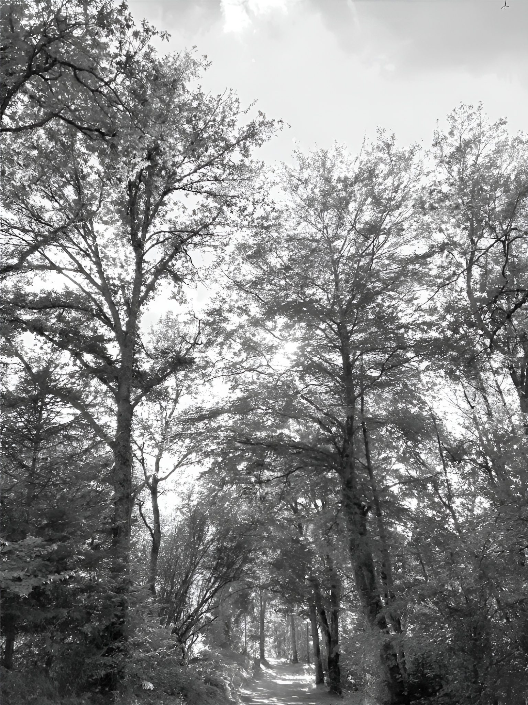

Projets sélectionnés
Une sélection soignée
Tous les projets

Conception et pilotage de projets de paysage —
châteaux, domaines historiques et propriétés d'exception.
Chaque projet naît d'une lecture fine du site — sa topographie, sa géographie, son patrimoine végétal.
De la résidence privée à la résidence de l'Ambassadeur de France, j'assume la pleine cohérence du résultat — de l'esquisse à la livraison.
L'approcheLa relation de confiance avec les clients est essentielle : un projet réellement partagé, de la conception au suivi de chantier.
Je collabore avec les architectes, les décorateurs et les urbanistes pour créer des espaces extérieurs singuliers.
Le végétal constitue la matière première du projet de paysage. Par son architecture, il structure l'espace et lui donne sens.
Le parc d'une demeure historique n'est pas un jardin comme les autres. C'est un héritage vivant — tracés d'origine, perspectives, arbres centenaires, murs et bassins oubliés — qui demande une lecture patiente avant tout dessin.
Le changement climatique met aujourd'hui ce patrimoine à l'épreuve : buis, hêtres et sujets centenaires souffrent partout en France. Je conçois des plans de restauration et de replantation qui respectent l'esprit du lieu tout en le préparant aux cinquante prochaines années.
L'Étude de parc. Une visite approfondie, une lecture historique et paysagère du site, un concept directeur et une feuille de route chiffrée — le point de départ de toute transformation sérieuse.
Demander une étude de parc
De la résidence de l'Ambassadeur de France à La Havane aux hôtels de prestige réalisés avec Bouygues Bâtiment International, en passant par des domaines privés à travers la France.
Je collabore régulièrement avec des architectes, des décorateurs et des promoteurs immobiliers qui recherchent un partenaire paysagiste de haut niveau.
Les projets sont acceptés de façon sélective. Si votre demeure — château, domaine ou propriété d'exception — mérite une vision paysagère sérieuse, prenez contact.